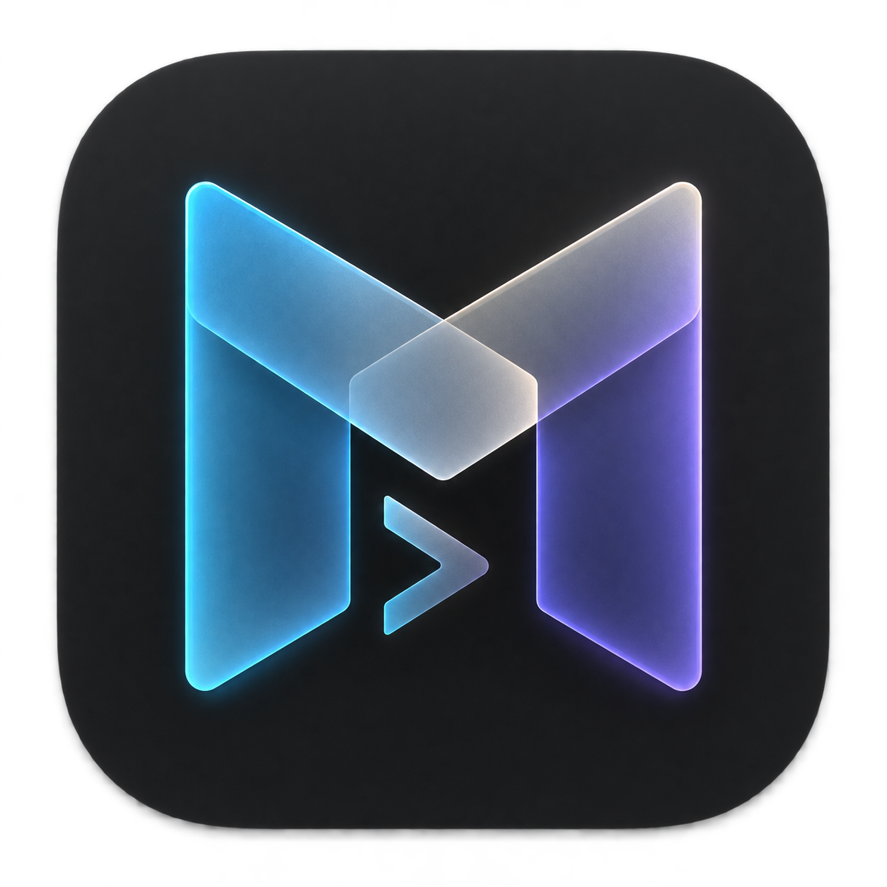

01 / PROJECTS
A home for each project
Name a workspace, choose its folders and tabs, and open it again from a small desktop launcher.

MicaA focused home for the shells, coding agents, and everyday tools that make up your work.
For macOS 14+ · Source available on GitHub
Keep the project context close while you move between your shell, coding agents, and the small tasks that keep a project moving.
Name a workspace, choose its folders and tabs, and open it again from a small desktop launcher.
Run Codex and Claude Code in regular terminal sessions. Mica surfaces agent activity and input requests.
Hold left Option to dictate into the active shell. Speech recognition runs locally after the first model download.
Interactive zsh, aliases, plugins, arbitrary commands, selectable output, and bounded scrollback.
Keep a shared focus and break timer across project windows, with macOS notifications at phase changes.
A lightweight AppKit interface with a C session core and libvterm rendering.
Mica is under active development. There’s no packaged download just yet. If you have a Mac and the Xcode command line tools, you can build the app in a few commands.
Check releases for future downloads ↗Explore the code, follow development, or help make Mica better.